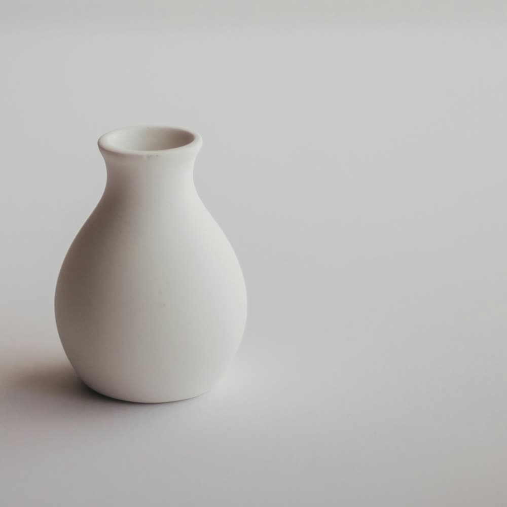
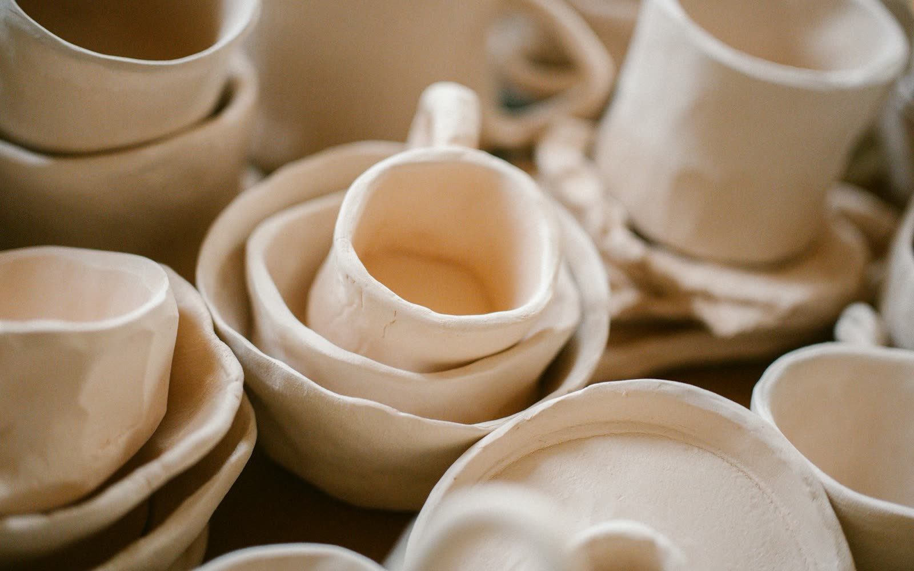
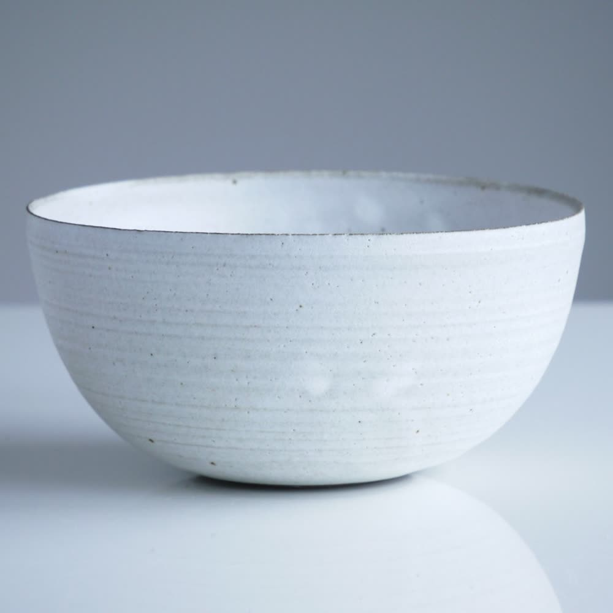
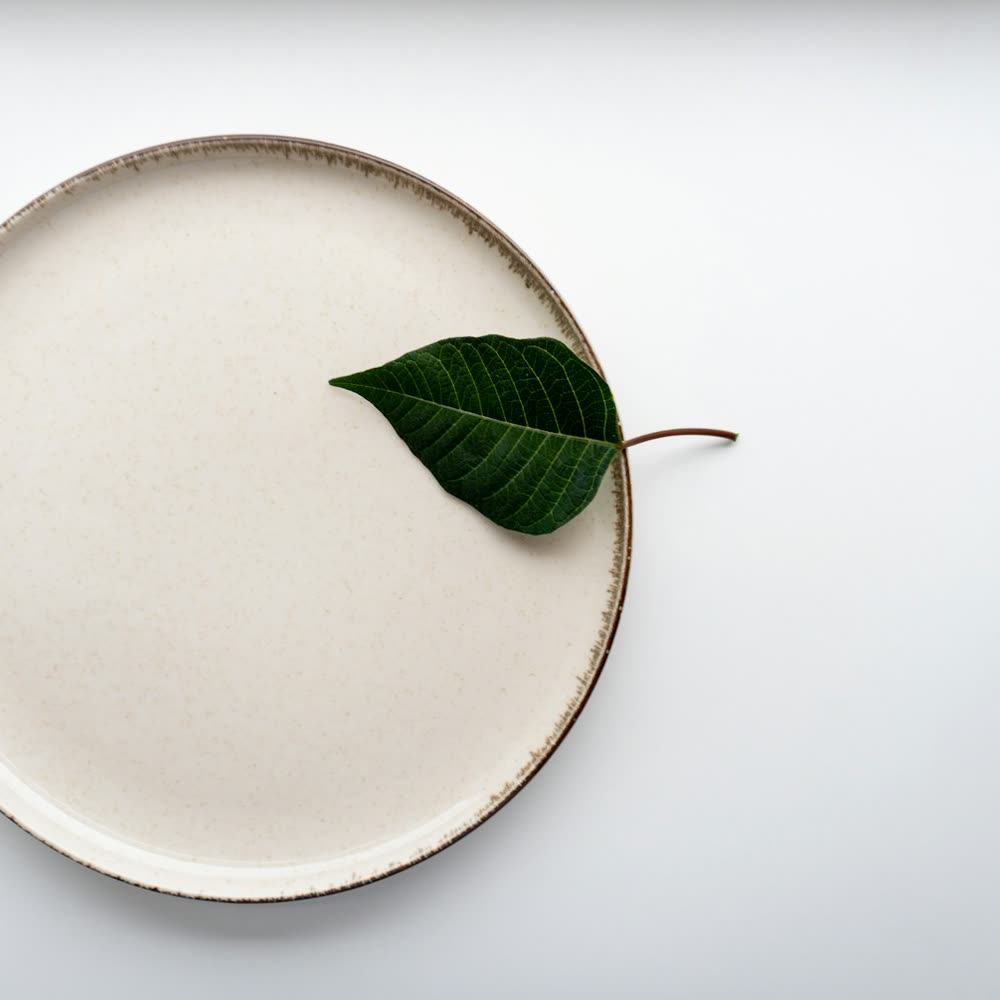
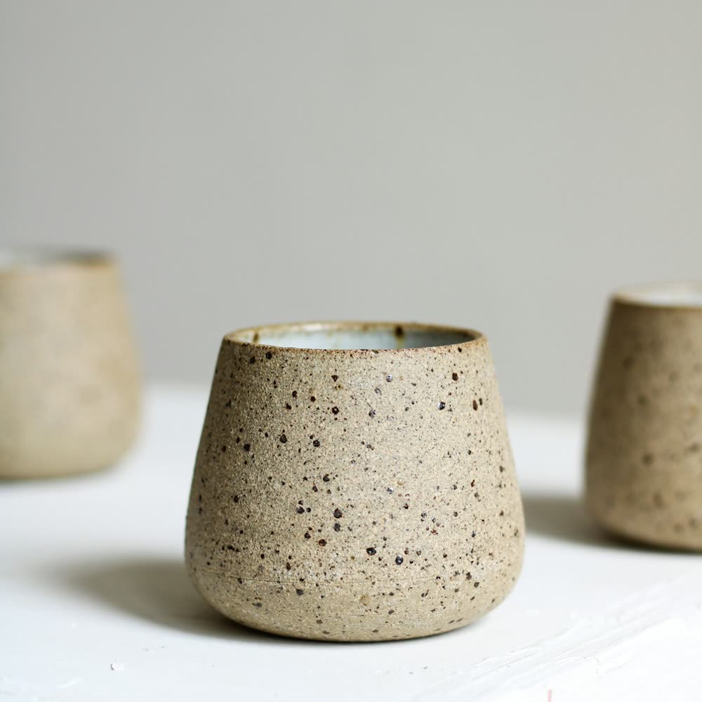
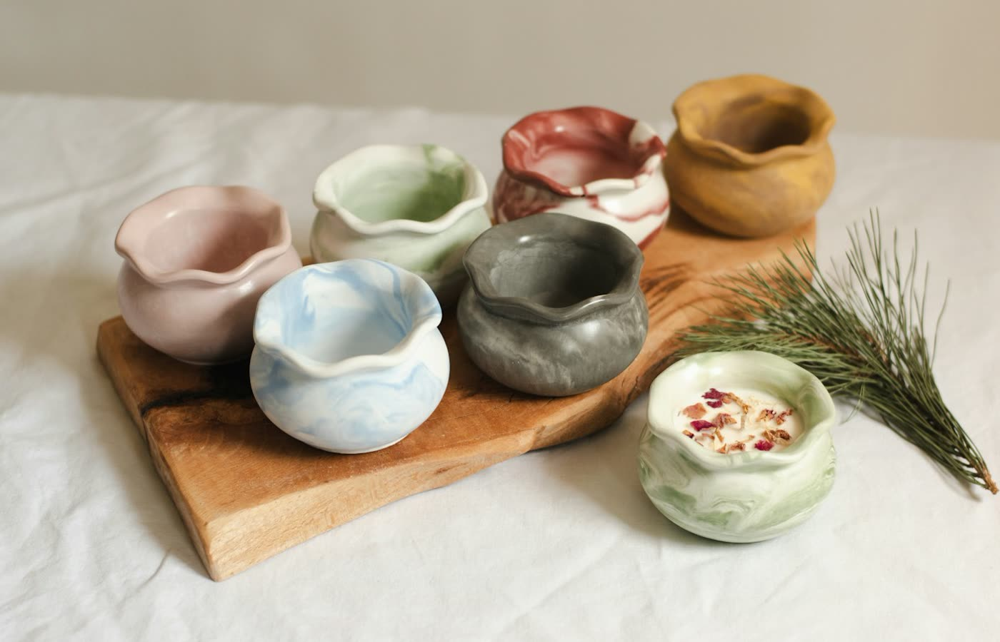
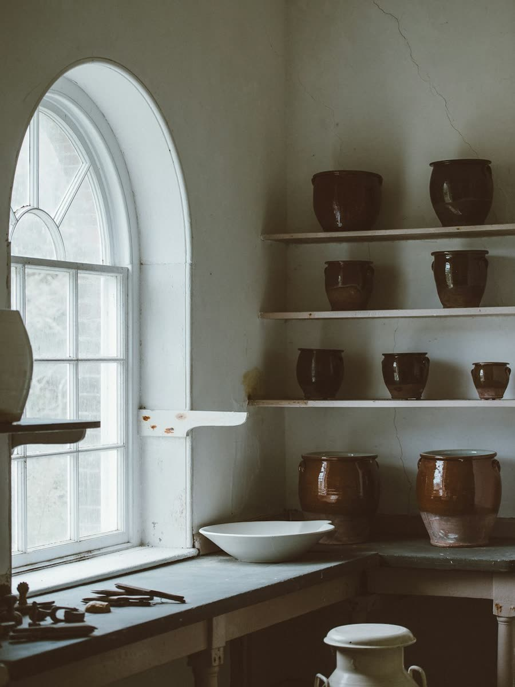

호리병 꽃병
38,000무광 흰 유약, 한 송이 꽂이 · 높이 14cm

흙을 고르고, 물레를 돌리고, 말리고, 굽고, 유약을 입혀 한 번 더 굽습니다. 한 점이 나오는 데 3주가 걸리고, 그래서 한 달에 정해진 만큼만 만듭니다.
lookbook
스크롤을 내리면 옆으로 넘어갑니다

무광 흰 유약, 한 송이 꽂이 · 높이 14cm

손자국을 그대로 남긴 국그릇 · 지름 15cm

가장자리에만 철 유약을 둘렀습니다 · 지름 21cm

흙 속 철 점이 드러나는 손잡이 없는 잔 · 180ml
스물네 점을
더 구웠습니다

small bowls
가장자리를 손으로 접은 작은 그릇
같은 틀에서 나와도
유약이 흐른 자리는 다 다릅니다
소스나 견과를 담는 종지로, 반지를 두는 접시로 씁니다. 전자레인지와 식기세척기에 넣을 수 있습니다. 색은 가마 자리마다 조금씩 달라집니다.

open studio
굽기 전의 그릇과 가마를 구경하고, 조금 흠이 있는 그릇은 싸게 가져갈 수 있습니다. 한 번에 여섯 분까지 받습니다.